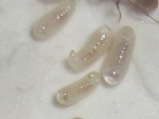
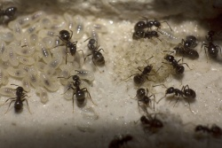

Ameisenlarve
{kind=link}

Aus den kleinen weißen Eiern schlüpfen nach einiger Zeit (temperatur- und artabhängig; s. hierzu Entwicklungsdauer) die Larven. Das Larvenleben ist untergliedert in 3-5 Larvenstadien; aus dem Ei schlüpft die L1 (Larvenstadium 1), diese häutet sich zur L2 usw. Vor der Häutung zur Puppe spinnt das letzte Larvenstadium in manchen Unterfamilien (z. B. Formicinae, Myrmeciinae, Ponerinae) einen Kokon aus Spinnseide, die der Labialdrüse entstammt.
Die weichhäutigen, meist länglichen und gelblich-weiß gefärbten Larven weisen je nach Ernährungszustand einen sichtbaren "Nahrungsfleck" auf. Bei den Larven ist der Verdauungstrakt noch nicht durchgängig, sondern zwischen Mittel- und Enddarm verschlossen. Die unverdaulichen Nahrungsreste sammeln sich im sogenannten "Kotsack" an. Der Inhalt des Mitteldarms einschließlich Kot ist gelegentlich als dunkler "Fleck" zu sehen. Wenige Tage vor der Verpuppung entsteht eine Verbindung zwischen Mittel- und Enddarm und die Larve scheidet die "gespeicherten" Nahrungsreste in Form eines "Meconiums" aus. In diesem Zustand, also Kotsack entleert, aber noch nicht zur Puppe gehäutet, wird die Larve als Vorpuppe (Präpuppe) bezeichnet. Sie erscheint schlaffer als die zuvor pralle Larve und ist weniger durchsichtig. In ihrem Inneren bilden sich nun die Fühler, Beine, Flügel usw. aus, die dann nach Abstreifen der Larvenhaut außen an den Puppen sichtbar sind. Bei Ameisen mit Kokonpuppen erfolgt dies erst nach dem Spinnen des Kokons, aber noch vor der Häutug der Larve zur Puppe. Das Meconium ist als dunkler Fleck am Hinterende der "Puppenhülle" zu sehen. Bei Arten mit Nacktpuppen wird der Larvenkot ebenfalls kurz vor der Verpuppung ausgestoßen. Er wird dann als bräunlich-schwarzes Klümpchen zum Abfall gebracht.
{kind=link}

Eine Verwechslungsgefahr besteht vor allem bei jungen Larven mit den winzigen Eiern, die oft zusammen mit den Puppen bei Umzügen von Arbeiterinnen zwischen den Mandibeln transportiert werden. Meistens handelt es sich hierbei aber tatsächlich um Larven, nicht um Eier. Die Eier werden ansonsten von den Larven getrennt gelagert, da Larven diese fressen können.
Das Larvenstadium ist bei allen holometabolen Insekten das einzige Stadium, in dem ein Wachstum stattfindet; Eier, Puppen und Imagines wachsen nicht.
Larven sind im Gegensatz zu den anderen Brutstadien der Ameisen zu einer Überwinterung fähig.